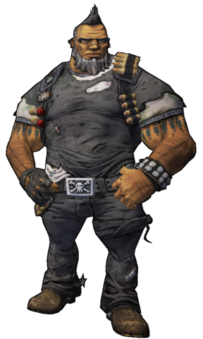

TAKE CONTROL OF YOUR OWN STARSHIP IN A CUTTHROAT GALAXY


Gavro
Ce jeune esclave des bas fonts de la mine de Tzu'Yun Kin à pris part à la grande révolution de Zen'Zun Zin lors de la libération des mines. Rapide et puissant, Gavro c'est illustré à de nombreuses reprise dans des batailles spaciales. Son attaque spéciale réduit en cendre toute chose vivante ou non étant sur son passage.
Sheriff
Douce et ténébreuse, elle est l'infirmière du diable. Xandarienne de naissance, Sheriff à vu sa famille périr dans les flammes de Nazgul étant enfant. Depuis, la jeune guerrière consacre sa vie à prendre celle de ces ennemis et à préserver celle de ces amis.




Salvador
Incarnez Salvador, le héros de la bataille d'Hypérion ! Véritable sumo, Salvador a tout misé sur la défense en développant un bouclier suprasonic interceptant tout type de laser ou projectile le visant.